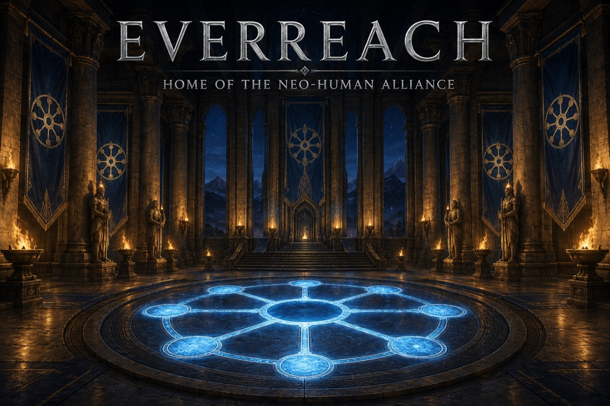
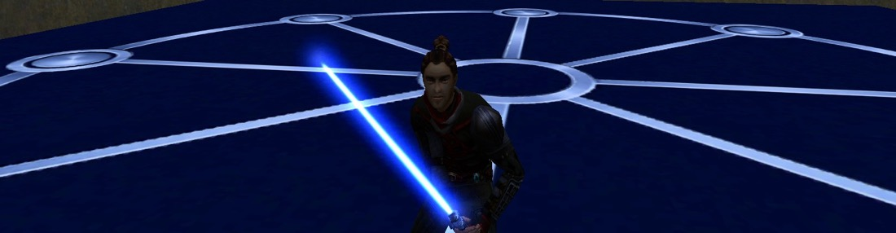

Take the home with you
Everything here was made by the Alliance, for the Alliance. Our packages carry only our own work — geometry, textures, and art we built ourselves. You need Jedi Academy multiplayer (OpenJK recommended) to play.
Everreach — NHA Home

nha_home — the clan seat. The Great Hall with the Circle's emblem inlaid in its floor, the Memory Gallery bearing the eight names, two duelling floors, quarters for every member, and at least one thing you will not find on your first visit.
↓ Download nha_home.pk3 · about 3 MB
Kölja — the First Ally

kolja — the First Ally's own likeness, modelled by his hand and rigged for Jedi Academy by the Alliance. The voice pack carries his real voice — every taunt, every fall, recorded by the man himself. Install both and he is fully himself on any server.
↓ Download kolja.pk3
· about 0.5 MB
↓ Download kolja_voice.pk3
· about 0.1 MB
How to install
- Download the files above.
- Drop them into your game's
basefolder — Windows:…\GameData\base\· Mac (OpenJK):~/Library/Application Support/OpenJK/base/ - Restart the game. Find Everreach - NHA Home in
Create Server, or open the console and type
/map nha_home.
Joining our server instead? It offers the map automatically when you connect — but the in-game transfer is slow, so grabbing the file here first is the fast way in.
Built by Kaia for the Neo-Human Alliance.